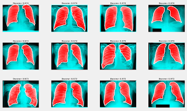

Research Interests
Following my interests, I tries to work in the domain of Breast (mammograms and sonograms) lesions delineation and classification that could bring betterment in the lives of women. Breast cancer is the second most deadly disease across womanhood. It is one of the growing fields of medical image analysis which stresses upon the automatic recognition of breast lumps and cysts. Various modalities have been adapted to diagnose and analyse breast lesions. Mammograms, Ultrasound (sonograms), PET/CT images and MRI are some of such droplets from a big sea of medical image categories. Medical Image Segmentation Image segmentation is a commonly used technique in digital image processing and analysis to partition an image into multiple parts or regions, often based on the characteristics of the pixels in the image. Image segmentation could involve separating foreground from background, or clustering regions of pixels based on similarities in color or shape. It is the most fundamental process which could be applied to an image. The goal of segmentation is to simplify and/or change the representation of an image into something that is more meaningful and easier to analyze. Therefore, segmenting an image into its representative objects is assumed to be the initial step. original ultrasound image (left) and segmented ground truth image (right)  (c) segmented lungs image Medical Image Classification Image Classification refers to a process in computer vision that can classify an image according to its visual content. It is considered as an important step in automatic lesion delineation processes. It refers to the task of seamlessly extracting the objects from the visual raster image. When followed by segmentation, it proves to be an advantage for CAD. In the case of breast lesion classification, only two class classification can be taken care of. But in special cases BIRADS (Breast Imaging-Reporting and Data System)classification system is also followed. Explained below is the two most cancerous carcinoma's that occur in the form of benign and malignant breast cancers types in women. Benign and Malignant breast diseases Awards and Recognition
Breast Mass Dataset (mammogram and sonogram) To access the dataset, feel free to contact me at: rarora[AT]cs[DOT]iitr[DOT]ac[DOT]in |
{kind=link}
{kind=link}